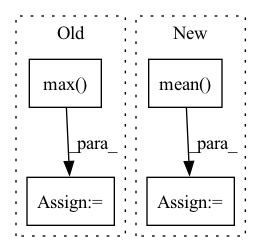

Pattern ID :4378

Before Change
def forward(self, y_s: torch.Tensor, y_s_adv: torch.Tensor, y_t: torch.Tensor, y_t_adv: torch.Tensor) -> torch.Tensor:
_, prediction_s = y_s.max(dim=1)
_, prediction_t = y_t.max(dim=1)
return self.margin * F.cross_entropy(y_s_adv, prediction_s, reduction=self.reduction) \
+ F.nll_loss(shift_log(1. - F.softmax(y_t_adv, dim=1)), prediction_t, reduction=self.reduction)
After Change
def forward(self, y_s: torch.Tensor, y_s_adv: torch.Tensor, y_t: torch.Tensor, y_t_adv: torch.Tensor) -> torch.Tensor:
loss = -self.margin * self.source_disparity(y_s, y_s_adv) + self.target_disparity(y_t, y_t_adv)
if self.reduction == "mean":
loss = loss.mean()
elif self.reduction == "sum":
loss = loss.sum()
return loss
In pattern: SUPERPATTERN
Frequency: 3
Non-data size: 4
Instances
Fragment ID: 16143702
Project Name: thuml/transfer-learning-library
Commit Name: 58bbc2031a2503955c79eff24797de49ee7d7ee7
Time: 2021-01-07
Author: 13126830206@163.com
File Name: dalib/adaptation/mdd.py
M Class Name: MarginDisparityDiscrepancy
N Class Name: MarginDisparityDiscrepancy
M Method Name: forward(5)
N Method Name: forward(5)
M Parent Class: nn.Module
N Parent Class: nn.Module
M File Name: dalib/adaptation/mdd.py
N File Name: dalib/adaptation/mdd.py
M Start Line: 62
M End Line: 65
N Start Line: 61
N End Line: 66
'>
Before Change
loss = loss_f(outputs.cpu(), labels.cpu())
// 统计混淆矩阵
_, predicted = torch.max(outputs.data, 1)
for j in range(len(labels)):
cate_i = labels[j].cpu().numpy()
pre_i = predicted[j].cpu().numpy()
conf_mat[cate_i, pre_i] += 1.
After Change
acc_batch_list.append((1 - np.abs(outputs.cpu().detach().numpy() - labels.cpu().detach().numpy())))
ocean_acc = np.concatenate(acc_batch_list, axis=0).mean(axis=0)
acc_avg = ocean_acc.mean()
return loss_mean, ocean_acc, acc_avg
'>
Fragment ID: 16143699
Project Name: liaorongfan/deeppersonality
Commit Name: 565a883600a2f9be36416c98383ef54294da8ab1
Time: 2021-05-23
Author: 15670381505@163.com
File Name: dpcv/engine/portrait_model_trainer.py
M Class Name: ModelTrainer
N Class Name: ModelTrainer
M Method Name: valid(4)
N Method Name: valid(4)
M Parent Class: object
N Parent Class: object
M File Name: dpcv/engine/portrait_model_trainer.py
N File Name: dpcv/engine/portrait_model_trainer.py
M Start Line: 60
M End Line: 87
N Start Line: 54
N End Line: 71
'>
Before Change
loss = loss_loc * self.box_ratio + loss_conf * self.balance[l] * self.obj_ratio + loss_cls * self.cls_ratio
num_pos = torch.sum(y_true[..., 4])
num_pos = torch.max(num_pos, torch.ones_like(num_pos))
return loss, num_pos
def get_near_points(self, x, y, i, j):
sub_x = x - i
After Change
tobj = torch.where(y_true[..., 4] == 1, giou.detach().clamp(0), torch.zeros_like(y_true[..., 4]))
else:
tobj = torch.zeros_like(y_true[..., 4])
loss_conf = torch.mean(self.BCELoss(conf, tobj))
if n != 0:
print(loss_loc * self.box_ratio, loss_cls * self.cls_ratio, loss_conf * self.balance[l] * self.obj_ratio)
loss += loss_conf * self.balance[l] * self.obj_ratio
return loss
def get_near_points(self, x, y, i, j):
'>
Fragment ID: 16143705
Project Name: bubbliiiing/yolov5-pytorch
Commit Name: 27ae9bd10c96138c60752d1da4fa965c0b7372f3
Time: 2022-01-21
Author: 47347516+bubbliiiing@users.noreply.github.com
File Name: nets/yolo_training.py
M Class Name: YOLOLoss
N Class Name: YOLOLoss
M Method Name: forward(4)
N Method Name: forward(4)
M Parent Class: nn.Module
N Parent Class: nn.Module
M File Name: nets/yolo_training.py
N File Name: nets/yolo_training.py
M Start Line: 156
M End Line: 200
N Start Line: 159
N End Line: 201